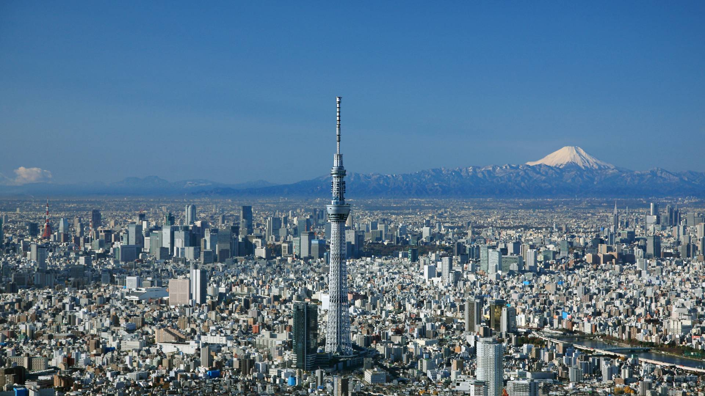

Loading date and time...
Which feature has a larger effect on the human population, latitude or elevation?
Consider bustling cities like New York, London, Tokyo, and Paris—all situated within 200 feet above sea level in the northern hemisphere. Elevation and latitude, key factors in civilization development, take the spotlight in untangling this geographical narrative. With a background in geography and history, my exploration aims to decipher whether elevation or latitude holds a more substantial sway over human population distribution. Beyond maps and statistics, this journey seeks to expose the dynamics that have shaped societies. Whether you're a geography enthusiast or just curious about the world, this investigation delves into the interplay between elevation, latitude, and the growth of civilizations. Scroll down to uncover the answers and discern if elevation or latitude emerges as the primary force shaping human habitation patterns.
Let's take a look at the largest city in the world, Tokyo.

The Tokyo metro area has an astounding population of 40.8 million people. It is hard to successfully grasp this amount of people living inside a single urbanized area. To put this into perspective, this is more people than the entire countries of both Australia and Canada. Unsurprisingly, Tokyo only sits at a meager elevation of 137 feet above sea level and much of the city lies directly on the coast. This is largely the reason that Tokyo was able to become the most populous city on the planet. Another geographical feature of Tokyo is its latitude. Tokyo lies at about 35 degrees north. This means that Tokyo lies directly in the temperate zone. As such, the temperatures in Tokyo rarely get below freezing and rarely get above 100F or 38C. Tokyo also receives plentiful precipitation in the form of rain and hardly ever sees snow. These factors combine to create an extremely desirable climate to create a metropolis.
My Visualizations
My Answer